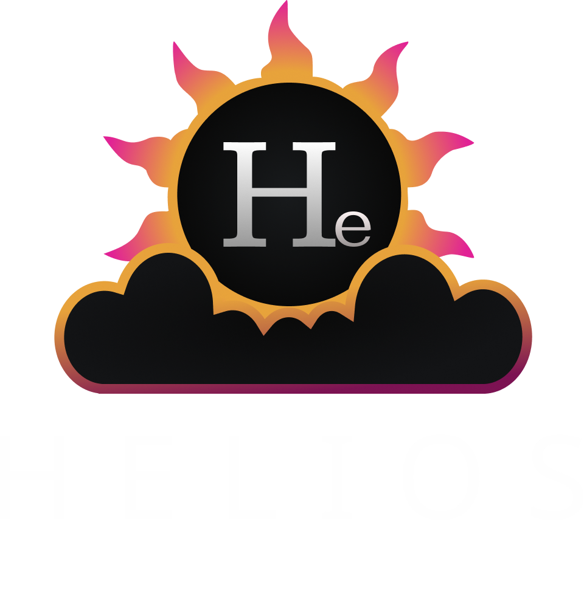

Get Started
Set up Google Cloud basics, run the sample Pet Shop subgraphs, and point the gateway at them.

Documentation
Cloud-native GraphQL federation gateway built on top of Apollo Federation Gateway, with dynamic service discovery, Firebase authentication, RBAC, and an admin console.
Set up Google Cloud basics, run the sample Pet Shop subgraphs, and point the gateway at them.
Install and operate Helios Gateway as the single GraphQL endpoint for federated subgraphs.
Run the codebase locally, understand the main modules, and use the right test surface for each change.
Detailed discovery behavior, environment groups, and API metadata for operators and maintainers.